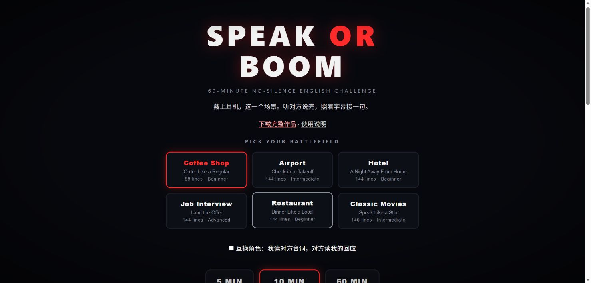
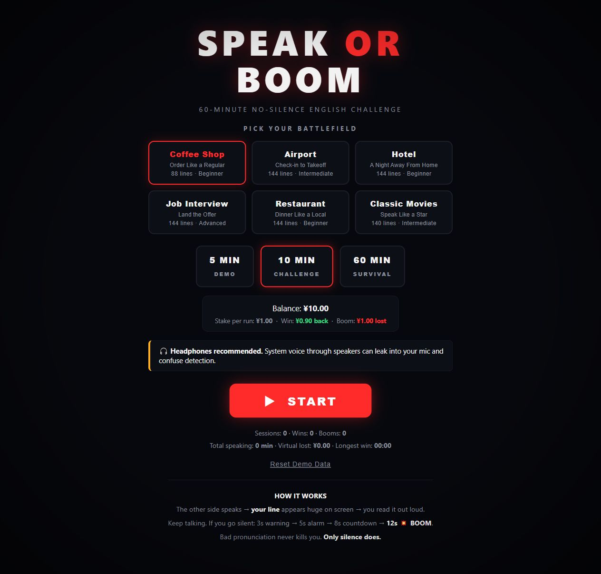
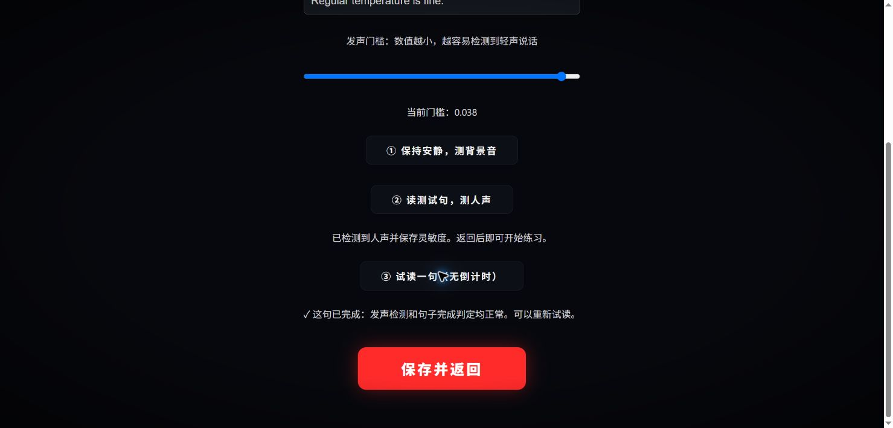
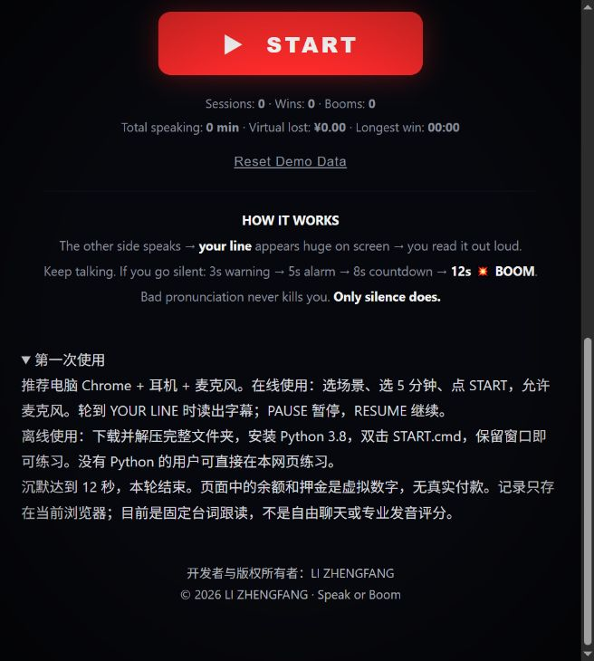
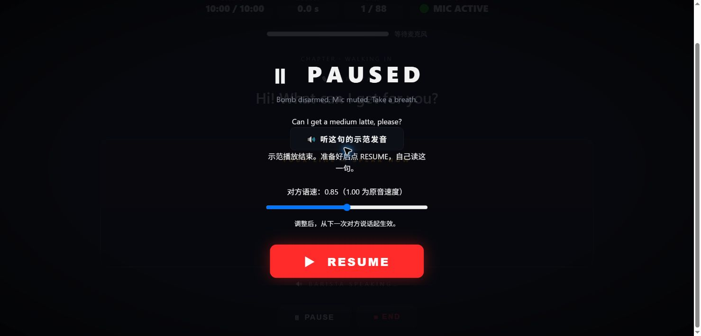

方寸拾雅 · LI ZHENGFANG
排版草稿：在线练习页已发布，本文尚未发表。
我做了一台“英语跑步机”，从一杯咖啡开始
先把练习入口放在这里，想试的朋友可以直接打开。
Speak or Boom 在线练习：
https://li-zhengfang.github.io/speak-or-boom/
打开网页，选场景和时长，点击 START，允许麦克风，就能开始。不用注册，也不用安装。推荐电脑 Chrome，戴耳机、接好麦克风。微信里打开时，请把网址复制到 Chrome。想把作品存下来，页面也有“下载完整作品”的入口。

想象这样一个早晨。
你是一个刚到纽约的 newcomer，拖着箱子，走进街角的咖啡店。磨豆机响着，身后有人排队，店员抬头问你想喝什么。
菜单上的单词都认识。可轮到自己，脑子里还是先过了一遍中文。
“Can I get a medium latte, please?”
就这么一句。没有复杂的语法，却要把声音送到另一个人面前。
纽约是我想象的画面。这样的时刻，也可以发生在机场柜台、酒店前台，或任何一次需要说英语的相遇里。
我想解决的，就是这句话出口之前的那几秒。
01 / 给英语一条不停的跑步带
我觉得，学英语常常缺的，是一段能持续待在英语里的时间。
我们可以收藏很多资料，也能看懂不少句子。但关掉视频、合上书，又回到了不需要说英语的生活里。真正轮到开口，练过的东西似乎还停在纸上。
所以我做了 Speak or Boom。我喜欢把它叫作一台“英语跑步机”。
戴上耳机，对方说一句，屏幕给出你要回应的字幕。你读出来，再听下一句，再接下去。咖啡店里点完饮品，还要选杯型、回答要不要加糖；办好入住，可能又要问早餐和退房时间。
跑步带往前走，你也跟着往前走。
刚开始不用自己编答案。字幕在眼前，像扶手一样，让你先站稳，先把声音发出来。我希望练习里少一点“下一步该干什么”的犹豫，多一点听见英语、说出英语的连续时间。
现在有咖啡店、机场、酒店、求职面试、餐厅和经典电影六种场景。都是写好的对话，适合照着字幕练习，还不是自由聊天。
想换个位置，也可以互换角色。刚才还在点咖啡，下一轮就站到柜台后面，问对方想喝什么。同一个场景，从两边各走一遍，会注意到不同的表达。

02 / 沉默，也会有倒计时
这个工具有一点小小的紧张感。
轮到你说话，如果一直不出声，3 秒时出现提醒，5 秒时催你开口，8 秒进入最后的倒计时；连续沉默达到 12 秒，本轮结束。
游戏里会出现 BOOM。它只是一个虚拟的结束提示，可以重新开始，没有现实中的危险。
我想要的是那种“这一句，现在就说”的节奏。听一段、停一停、刷一下手机，很容易又把练习放过去；倒计时让注意力重新回到眼前的句子。
说得慢一点，带着自己的口音，先把句子读完。它主要检测是否持续发声，不是专业的发音评分。字幕会逐词高亮，帮助你跟读。
对方说话时，沉默倒计时不会启动。需要休息，可以按 PAUSE 暂停，再按 RESUME 继续。跑步机也有扶手和停止键，练英语同样应该留出调整的余地。
第一次建议从 5 分钟开始。觉得合适，再试 10 分钟，或 60 分钟的持续练习。长时间模式会重新排列章节、重复练习，并不是一小时完全不重复的台词。
03 / 给句子一点电影里的温度
我也想让英语练习有一点生活之外的趣味。
比如《阿甘正传》《泰坦尼克号》《肖申克的救赎》。想到这些名字，脑海里往往先有一个人、一段相遇，或一个舍不得忘记的画面，然后才是某句英文。
电影让语言带着表情和处境。同样一句话，安慰朋友和第一次见面，说出来的感觉就不同。
当前版本里也放了经典电影表达练习，配有角色对话。你可以试着读出那个语气，不必一开始就模仿得很像。
我希望英语能多一些这样的具体时刻：点到想喝的咖啡，问清一段路，听懂对方，又能接上一句话。
练习的意义，对我来说，就在这些细小的地方。

04 / 留五分钟，试着开口
在线练习：
https://li-zhengfang.github.io/speak-or-boom/
建议用电脑 Chrome，戴耳机、接好麦克风。微信里打开时，把上面的地址复制到 Chrome。
直接在线使用：
① 打开上面的练习网址，不用注册或安装。
② 先点“麦克风测试与校准”，确认读句子时收到人声。再试听对方的英语，调到自己舒服的速度。六个场景的两边台词都已配音，电脑和手机用同一套声音。
③ 选择场景和时长，第一次先试五分钟。点击 START，允许使用麦克风。对方说完，轮到你，就跟着字幕读；读完稍停一下，进入下一句。
④ 中途想歇一会儿，点击 PAUSE。某一句不熟悉，可以在暂停页听它的示范发音，准备好再点 RESUME，自己读一遍。切换到其他应用时，练习也会自动暂停。
页面也提供完整作品包下载。保存到电脑后，可以按包内说明用 Python 3.8 本地启动；在线练习不需要这一步。若讲话没有反应，先检查浏览器麦克风权限和输入设备。
页面里的余额和押金都是练习用的虚拟数字，没有真实付款，不用充值。练习记录保存在当前浏览器里。
不用先给自己定一个很大的目标。今晚找五分钟，从那杯拿铁开始，把一句原本只在眼前看过的话，真的说出声。
这是“方寸拾雅”分享的第一个作品。这里会记下我做的东西、试过的新鲜事，也放一些学习中的收获和生活里的感悟。
用过以后，欢迎告诉我哪一句让你卡住了，哪个场景还想多练一会儿。我想把它慢慢做成一个愿意经常打开的练习地方。
LI ZHENGFANG

